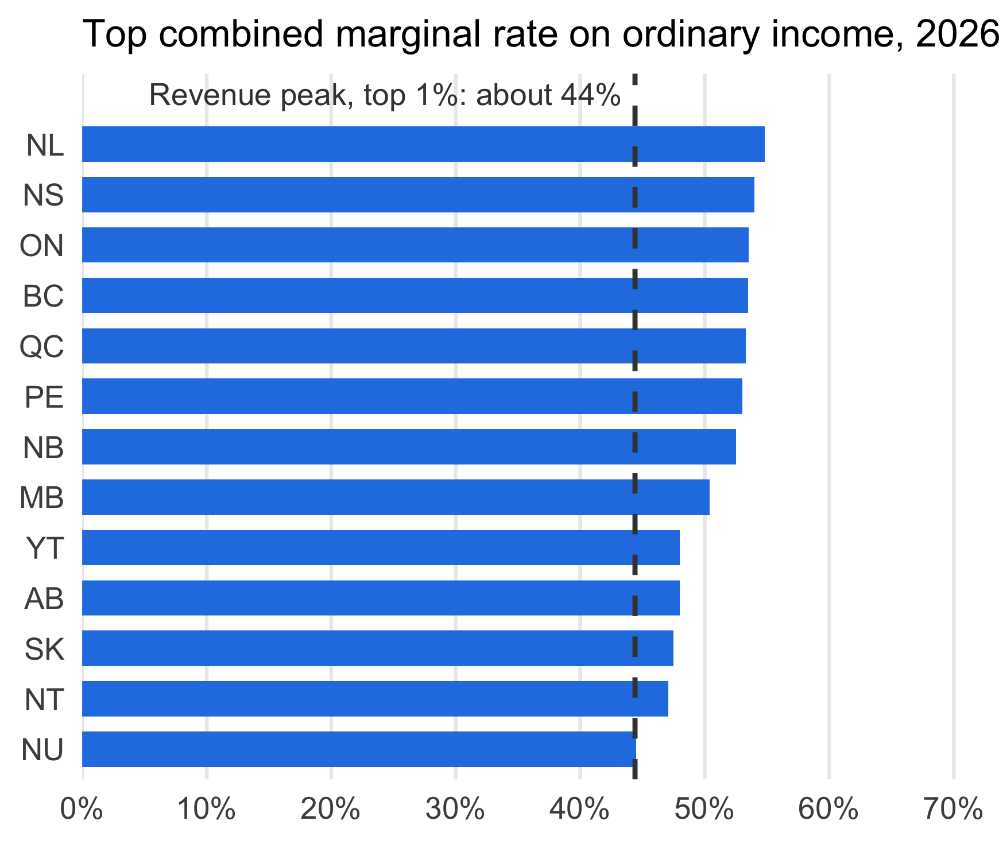

Personal Taxation and Behaviour
EC313 - Public Economics: Taxation
Justin Smith
Wilfrid Laurier University
Fall 2026

Preferences over Leisure and Income

- People value two “goods”
- Income: buys goods and services
- Leisure: all time not in paid work, chores and education included
Marginal Rate of Substitution (MRS)
The income someone will give up for one more hour of leisure and stay equally well off: the slope of the indifference curve
- Diminishing MRS: the more leisure you have, the less income you’ll give up for another hour
- Curves further from the origin are better
The Budget Constraint

Time Endowment and Full Income
The time endowment \(T\) is the hours available for work or leisure. Working all of them earns full income \(wT\)
- Each of the \(T - L\) hours of work pays the wage \(w\)
\[I = w(T - L)\]
- The slope is \(-w\): an hour of leisure costs the wage
- No income at \(L = T\); income \(wT\) at \(L = 0\)
A Change in the Wage

- A lower wage, \(w_1 < w_0\), makes the line flatter
- It swivels around \(L = T\): someone who doesn’t work earns nothing at either wage
- Full income falls from \(w_0T\) to \(w_1T\)
- Each hour of leisure now costs less income
- A tax on earnings does the same thing: it lowers the wage you keep
Choosing Hours of Work

- The best affordable point is where an indifference curve is tangent to the budget line
- There, MRS = \(w\): what you’d give up for an hour of leisure equals what it costs
- Hours of work \(h_0 = T - L_0\)
- Income \(I_0 = wh_0\)
- If the best point is \(L = T\), the person doesn’t work at all: non-participation
A Proportional Income Tax

- A proportional income tax takes the same share \(t\) of every dollar earned
- The net wage is \((1 - t)w\)
- The budget line pivots on \(T\): zero hours means zero tax
- The slope becomes \(-(1 - t)w\)
- Full income falls to \((1 - t)wT\)
- It’s the same picture as a wage cut
Hours Can Fall or Rise

Substitution effect larger: leisure rises from \(L_0\) to \(L_1\), so hours fall

Income effect larger: leisure falls from \(L_0\) to \(L_2\), so hours rise
A Progressive Income Tax

- Under a progressive income tax, rates rise with income: \(t_1 < t_2 < t_3\)
- The budget line kinks where each bracket starts
- Each segment is flatter, with slope \(-(1 - t_i)w\)
- The kinks come at \(h_0\) and \(h_1\) hours of work
- The same two effects apply, so the result is still ambiguous
- In this figure, leisure rises from \(L_0\) to \(L_3\)
The Laffer Curve

The Laffer Curve
The relationship between the tax rate and tax revenue: revenue is zero at rates of 0 and 100%, and highest somewhere in between
- Revenue peaks at \(t_A\), the revenue-maximizing rate
- Above \(t_A\), a rate cut raises revenue, so no government should be there
- The shape depends on the elasticity of labour supply with respect to the net wage
- Laffer (1979) argued that the US was above \(t_A\)
- That fed supply-side economics and the 1980s rate cuts in Canada and the US
The Intertemporal Budget Constraint

- Solve for future consumption
\[c_1 = (1 + r)(I_0 - c_0) + I_1\]
- The slope is \(-(1 + r)\): a dollar consumed now costs \(1 + r\) later
- The line passes through the endowment point \((I_0, I_1)\): consume income as it arrives
- The optimum is at the tangency, and saving is \(I_0 - c_0\)
Case I: Deductible Interest Payments

- A tax at rate \(t\) on interest income
- A saver keeps \((1 - t)r\) per dollar saved
- A borrower who deducts interest pays \((1 - t)r\)
After-Tax Interest Rate
\((1 - t)r\), for savers and borrowers alike
- The line rotates through the endowment point (no saving, no tax), to slope \(-[1 + (1 - t)r]\)
- Consumer and mortgage interest generally isn’t deductible in Canada, but some deals can be set up so it is (Chapter 17)
Saving Can Fall or Rise

Saving falls: \(c_0\) rises to \(c_0'\)

Saving rises: \(c_0\) falls to \(c_0'\)
Two Effects of the Tax on Saving
- Substitution effect: \(c_0\) is cheaper in terms of \(c_1\), so save less
- Income effect: lifetime resources fall, so (if \(c_0\) is a normal good) consume less now and save more
Case II: Nondeductible Interest Payments

- Savers earn \((1 - t)r\); borrowers still pay \(r\)
- The line kinks at the endowment point
- Flatter to the left, where people save: slope \(-[1 + (1 - t)r]\)
- Unchanged to the right, where people borrow: slope \(-(1 + r)\)
- People who borrowed before the tax are unaffected
- Savers face the same two effects as in Case I, so the result is still ambiguous
- This is the usual Canadian case for consumer and mortgage loans